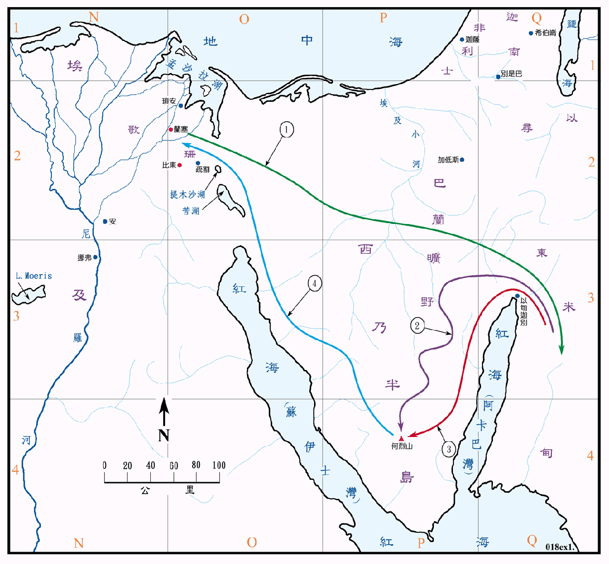

1526～1446BC

行动线说明
| 序号 | 圣经 | 说明 |
|---|---|---|
| 出1章 | 以色列人在埃及生养众多，极其强盛，但受法老王的虐待。 | |
| 出2:1-10 | 摩西出生，被法老的女儿收养。 | |
| 徒7:21，22 | 摩西学会了埃及人的一切学问，说话行事，都有才能。 | |
| 1 | 出2:11-2:22 | 摩西逃往米甸，与祭司流珥 (后来都称为叶忒罗) 的女儿西坡拉结婚。 |
| 2 | 出3:1-4:17 | 摩西到何烈山牧羊时，神的使者向他显现，遣他领以色列人出埃及。 |
| 3 | 出4:18-26 | 摩西一家启程回埃及，到了何烈山。 |
| 4 | 出4:27-31 | 亚伦到何烈山迎接摩西，一同回到埃及。 |
| 出5:1-12:36 | 摩西求法老许以色列人出埃及，法老不许，神在埃及降十灾。 |
1526BC 摩西出生，40岁 (1486BC) 时去米甸，80岁 (1446BC) 时领以色列人出埃及，120岁 (1406BC) 时去世。
自雅各全家七十馀人在1876BC 移居埃及，到摩西领他们於1446BC 出埃及，以色列人共在埃及住了四百三十年。在此间期，埃及经历了中王国时期 (1991～1778BC) 的黄金时代，到了第十三王朝 (约是1790～1700BC)，则渐衰微和分裂，历史也 糊不清。
随后埃及被来自亚洲的喜克索人统治 (1720～1584BC)，是埃及的黑暗时期，他们建都在亚华里斯 (可能即是兰塞)，但仍准许埃及人在底比斯维持虚有其表的政权，以色列人在此期间备受奴役。后来喜克索人被底比斯的法老逐往迦南，即开始了第十八王朝。
当摩西在1526BC 出生之时，埃及的法老是杜得模西士一世 (1539～1514BC)，他曾进军到达幼发拉底河，但无功而返。收留摩西的公主名叫哈雪苏，在1504～1482BC 年间与杜得模西士三世共同主政，但在实际上是哈雪苏拥有完全的统治权，由於她英明和坚强的领导，国势日强，成为埃及最杰出的统治者之一。摩西得到她的照顾，必然是受到良好的教养，身分也一定是非常的特殊，但也会受到一些的排挤。
米甸是在红海阿卡巴湾东侧的一个地区，和西乃及以东很相像，也是半沙漠和崎岖的山地，乾燥荒僻，它的疆界及范围都无从考证。米甸人可能是亚伯拉罕从基土拉所生第四个儿子的后代，是游牧民族，他们四出放牧，西乃也是他们常去的一个地方。